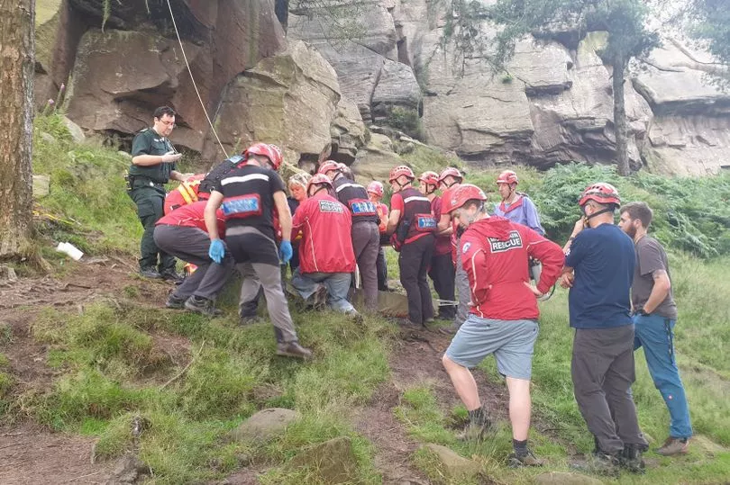

My career started in the Ambulance service and slowly transitioned into Software Development

West Midlands Ambulance Service
I attended Staffordshire University (Now University of Stafford) and qualified as a HCPC registered Paramedic, I then went to work for West Midlands Ambulance Service. I treated thousands of patients in my time and was both part of large teams and lead crews in stressful, time critical scenarios. I then Moved on to working in custody and covering private events.
Northcoders
I made the decision to leave custody in 2023 and joined the Northcoders bootcamp. During this time I worked on some small projects and learned the basics of javascript and other skills.
Other skills learned:
SQL
React
Tailwind
Mobile Development
Cleric
After Northcoders I was hired by Cleric. Cleric is a software company that specialises in ambulance software such as Electronic patient Report Forms, 999 Computer Aided Dispatch and Patient Transport Services